Intel i386
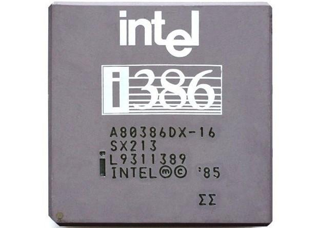Спустя три года после выхода Intel 80286 свет увидел его последователь — кристалл с индексом 80386. «Триста восемьдесят шестой» стал первым 32-разрядным процессором американской компании. Несмотря на то, что Intel 80386 всё ещё основывался на х86-архитектуре и сохранял обратную совместимость с «интеловскими» процессорами 8086 и 80286, он претерпел множество изменений. По некоторым оценкам, архитектура x86 не получала таких значительных изменений, как в случае с «камнем» 80386, еще долгие годы. Поэтому о них стоит рассказать подробнее.
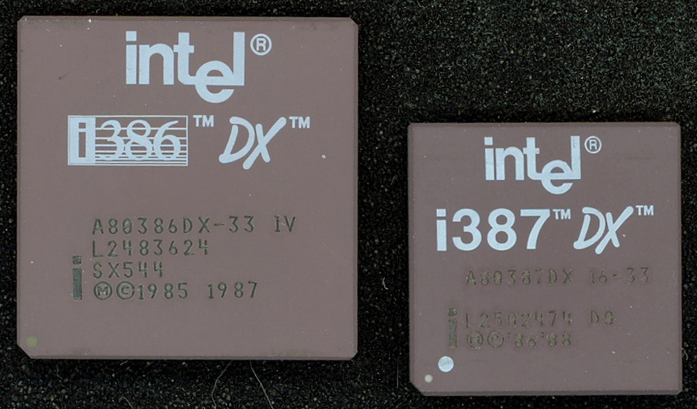Как мы уже сказали, процессор i386 сохранил обратную совместимость со своими предшественниками 8086 и 80286. То есть он умеет выполнять абсолютно все программы, написанные под предыдущие процессоры, причем делает это эффективнее. Большей производительности удалось достичь за счет более высоких тактовых частот, а также меньшего количества тактов синхронизации при выполнении программ. Так, например, умножение двух 16-разрядных чисел выполнялось за 9-22 тактов. Для сравнения: процессор 80286 выполнял эту операцию за 21 такт, а кристалл 8086 — за 118-133 такта. Преимущество i386 было налицо! Кроме этого, свою роль сыграл увеличенный буфер предвыборки команд, объем которого составлял 16 байт.
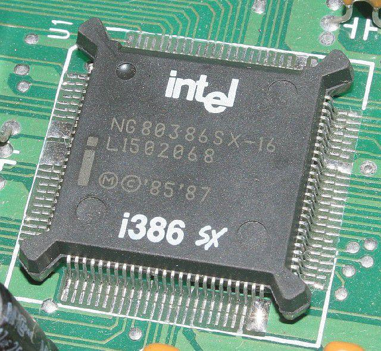Конечно, главным нововведением i386 было то, что процессор стал 32-разрядным. Вся архитектура x86 была расширена до 32 бит. Регистры стали 32-битными, и, само собой, процессор получил поддержку набора 32-разрядных инструкций. Что немаловажно, был значительно доработан защищенный режим работы, который впервые появился в 80286. Принцип работы защищенного режима остался прежним, но режим получил три важных нововведения: снятие ограничения на размер сегмента, страничный режим адресации (Page Addressing) и режим виртуального 8086 (Virtual 8086 Mode). В защищенном режиме i386 использовал такую же архитектуру с сегментами памяти, как и в предыдущих решениях Intel. Однако, если раньше максимальный объем сегмента памяти составлял 64 Кбайт, что уже на протяжении долгого времени не устраивало программистов, то теперь он увеличился до 4 Гбайт. Это значительно облегчило разработку 32-разрядных приложений, которые могли выполняться без переключений между различными сегментами памяти. Также в i386 стало возможно быстрое переключение между реальным и защищенным режимами без имитирования перезагрузки процессора. Что касается режима виртуального 8086, то он не представляет собой ничего особенного.
Интересно, что при создании «триста восемьдесят шестого» была допущена довольно большая ошибка. Так, процессор некорректно выполнял операцию умножения 32-разрядных чисел. Однако на момент выпуска чипа еще не существовало 32-битных операционных систем и приложений, поэтому ошибку обнаружили лишь спустя 18 месяцев — в апреле 1987 года. Все выпущенные, но не проданные процессоры Intel перемаркировала с пометкой «только для 16-битных операций». Все же выпущенные после обнаружения ошибки «камни» были маркированы двойным символом «сигма» (ΣΣ).
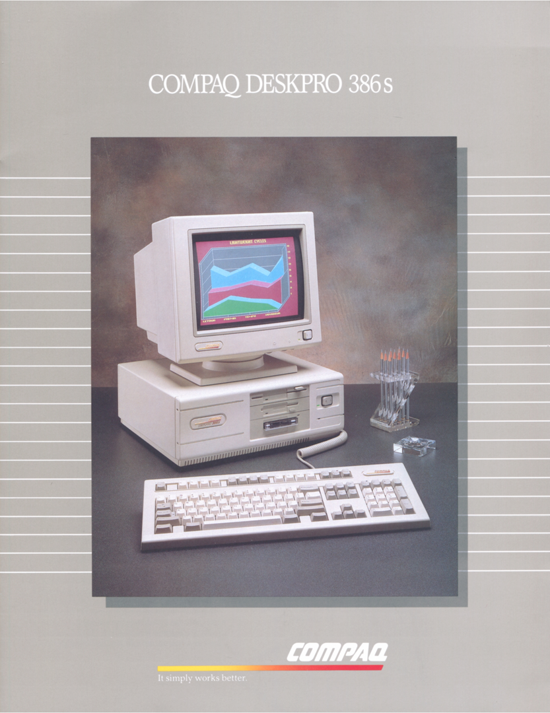Процессор i386 был выпущен в множестве различных версий, которые отличались производительностью, форм-факторами, энергопотреблением и другими характеристиками. i386 производился с помощью технологии CHMOS III, которая сочетала в себе быстродействие технологии HMOS и низкое энергопотребление технологии CMOS. При этом использовался 1,5-мкм техпроцесс, а количество транзисторов составляло 275 тысяч штук.
Первый i386 был представлен 13 октября 1985 года и имел тактовую частоту 16 МГц. Впоследствии данная модификация «камня» получила приставку DX — модель стала именоваться 386DX сразу после запуска более дешевого 386SX в июне 1988 года. Приставка DX расшифровывалась как Double-word eXternal, что подчеркивало поддержку процессором 32-битной внешней шины данных. Тактовая частота 386DX с годами увеличивалась. Так, в 1987 году частота была повышена до 20 МГц, в 1988 году — до 25 МГц. А в 1990 году в продажу поступила модификация с частотой 33 МГц. При всем при этом энергопотребление процессора оставалось на довольно низком уровне — даже ниже, чем у «восемьдесят шестого». 386DX выпускался в нескольких корпусах: например, в PQFP-132 и в керамическом PGA-132.
Главным недостатком 386DX являлась его высокая стоимость. В Intel хотели увеличить количество продаж нового поколения процессоров, и поэтому вскоре свет увидел «урезанный» кристалл 386SX. Чип был выпущен в 1988 году и в итоге стал самым популярным в линейке i386. По своей архитектуре он был полным аналогом версии DX, за исключением шин данных и адресов. Так, вместо 32-битной внешней шины данных использовалась 16-битная. Разрядность внешней адресной шины составляла 24 бит. При этом сам процессор оставался полностью 32-разрядным. Урезание внешней шины данных привело к тому, что обмен информации с 386SX осуществлялся на вдвое меньшей скорости, чем в случае с 386DX. Это снизило производительность кристалла примерно на 25%.
Первые 386SX имели частоту 16 МГц, которая затем повышалась до 20, 25 и 33 МГц соответственно. Версия SX предназначалась для настольных компьютеров начального уровня и портативных систем. На деле же процессор «прописался» в огромном количестве домашних и офисных систем.
Кроме модификаций SX и DX, был представлен один из первых энергоэффективных процессоров 386SL, предназначенный в первую очередь для лэптопов. «Камень» имел частоту 20 или 25 МГц и (в отличие от 386SX) содержал множество встроенных контроллеров: например, контроллер оперативной памяти, контроллер шины и контроллер внешней кэш-памяти, объем которой варьировался от 16 до 64 Кбайт. К тому же 386SL поддерживал различные «спящие» режимы, а также режимы системного управления (System Management Mode).
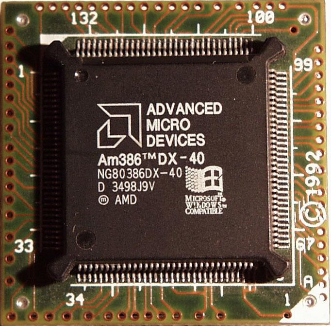Первым компьютером, использующим процессор i386, стал Compaq Deskpro 386. На то время Compaq стала первой «сторонней» компанией в истории, которая внесла существенные изменения в платформу PC. До того момента новые компьютеры первой всегда выпускала IBM. Она могла оказаться первой и на этот раз, но у IBM был долгосрочный контракт на использование 286-х процессоров, и в компании предпочли уделить 16-битной платформе еще некоторое время. Как показала история, этот шаг стал довольно большой ошибкой. Deskpro 386 отлично продавались, поэтому к моменту запуска первых компьютеров IBM на базе 386-го процессора компания уже утратила свои лидирующие позиции. В итоге Compaq сумела немного «перекроить» весь рынок десктопов. Так, возросла конкуренция, а влияние IBM было уже не столь существенным.

Как и раньше, вскоре на рынке появились клоны i386. Их производством занимались несколько компаний: AMD, Cyrix и IBM. Однако политика самой Intel в отношении клонов изменилась. CEO компании Энди Гроув принял решение не выдавать лицензии на производство модификаций i386 сторонним компаниям, однако впоследствии они все-таки появились. Первой клоны выпустила AMD в марте 1991 года. Процессоры были готовы задолго до этой даты, но в Intel были уверены, что лицензия на производство «дубликатов», предоставленная AMD, распространялась только на процессоры 80286 и более ранние, поэтому дело дошло до суда. Судебные тяжбы продолжались довольно долгое время, но в итоге AMD выиграла дело, и семейство процессоров AMD Am386 таки увидело свет. В линейку входили клоны как процессоров 386DX, так и 386SX. Топовая модель — Am386DX — получила тактовую частоту 40 МГц, то есть на 7 МГц больше, чем у самой производительной модификации Intel! Производительность такого процессора находилась на уровне уже выпущенного к тому времени кристалла следующего поколения от Intel — i486. При этом стоимость решения AMD была намного ниже, чем моделей Intel. Благодаря выгодному сочетанию цены и скорости процессор нашел применение во многих настольных системах.
Что касается клона 386SX — модели Am386SX, — то она была не столько обычной копией, сколько переработанной версией «интеловского» кристалла. Так, чип производился по более тонкому 0,8-мкм техпроцессу и использовал статическое ядро, которое позволило добиться энергоэффективной работы процессора. В среднем Am386SX был на 35% экономичнее, нежели оригинальный 386SX. И даже экономичнее, чем разработанный специально для портативных устройств процессор 386SL. При этом тактовые частоты Am386SX были, как правило, выше, чем у 386SX (максимальная тактовая частота составляла 40 МГц).
Кстати, несмотря на то, что Am386SX является клоном «интеловского» чипа, он считается первой самостоятельной разработкой AMD. Да и после запуска линейки Am386 AMD по праву стали считать одним из конкурентов Intel.
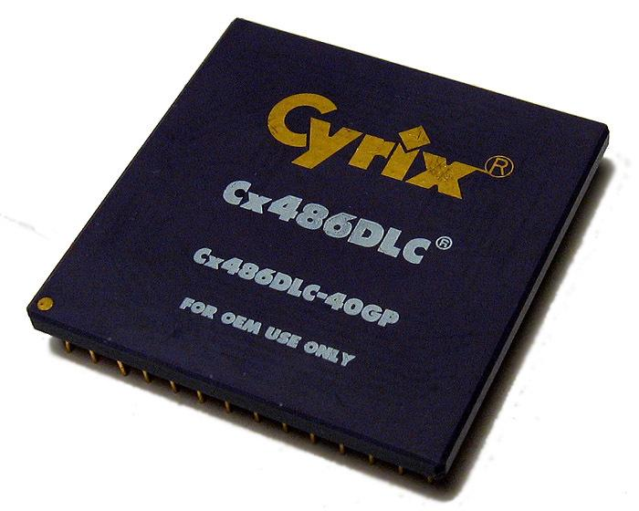Свое применение в лэптопах и недорогих настольных системах получили клоны i386, произведенные компанией Cyrix. Линейка «камней» состояла из двух моделей: 486SLC и 486DLC. Несмотря на индекс в названии, процессоры были копиями 386SX и 386DX соответственно. Тем не менее нужно отметить, что решения Cyrix получили поддержку набора инструкций i486. Интересной архитектурной особенностью линейки стало наличие кэш-памяти первого уровня объемом 1-8 Кбайт. Что касается тактовой частоты процессоров, то ее максимальный показатель составлял 40 МГц, как и в случае с AMD Am386. При этом энергопотребление Cx486 находилось на очень низком уровне. Процессоры не смогли составить достойной конкуренции линейке AMD. С течением времени Intel снижала цены на свою продукцию, и i486 удалось окончательно вытеснить кристаллы Cyrix.
Не осталась в стороне от производства клонов и компания IBM. В 1991 году она представила процессоры 386SLC и 386DLC, которые были клонами 386SX и 386DX, соответственно. Они использовались в настольных компьютерах IBM PS/2 и PS/ValuePoint, а также в лэптопе IBM ThinkPad.
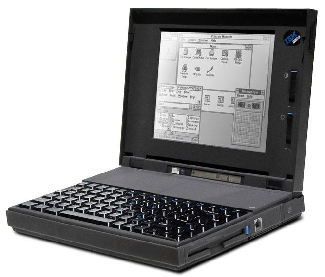Помимо вышеперечисленных моделей, Intel выпустила процессоры для встраиваемых систем: 80376 и 386EX. Первый кристалл увидел свет в январе 1989 года. От 386SX он отличался отсутствием поддержки реального режима работы («камень» работал только в защищенном режиме) и процесса замещения страниц в блоке управления памятью. Тактовая частота 376-го составляла 16/20 МГц.
Через 5 лет на смену 80376 пришел 386EX. Процессор поддерживал 26-битную адресацию памяти, имел статическое ядро, которое обеспечивало высокую энергоэффективность, и множество периферийных устройств: например, счетчики, таймеры и контроллер прерываний. В основном 386EX использовался в компьютерных системах различных орбитальных спутников, а также в проекте NASA под названием FlightLinux.
Intel i486
При разработке процессоров следующего (читай — четвертого) поколения инженеры Intel столкнулись с серьезными проблемами. Предыдущее поколение интегральных схем достигло потолка производительности, а размещать еще большее количество транзисторов на той же площади не позволяли используемые в то время технологии. Разработчикам ничего не оставалось, кроме как переработать существующую архитектуру, а точнее, дополнить ее. Так, процессоры i486 впервые обзавелись такими компонентами, как кэш-память, конвейер, встроенный сопроцессор и коэффициент умножения (множитель). Благодаря им новое поколение CPU стало быстрее своих предшественников. Но обо всем по порядку.
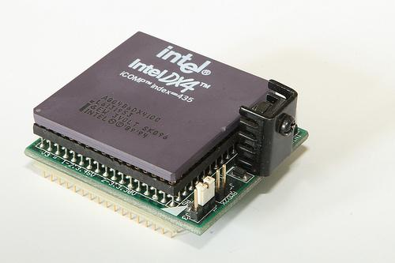«Что такое кэш-память?» — наши читатели прекрасно знают ответ на этот вопрос. Она располагается «между» процессором и оперативной памятью и хранит копии самых часто используемых данных из основной памяти. Время доступа к ней намного меньше, чем к основной памяти. Поэтому, когда необходимые данные содержатся в кэш-памяти, среднее время доступа к памяти значительно уменьшается. Процессор i486 получил кэш-память объемом 8 Кбайт. Первые 486-е процессоры работали с кэшем по принципу сквозной записи (Write Through), то есть данные всегда записывались в основную память, даже если они уже присутствовали в кэше. Затем «камни» научились работать с кэшем с помощью функции обратной записи (Write Back). При использовании этого принципа (при наличии их копии в кэше) записывались только в кэш-память, запись в оперативную память не производилась. Процессоры i486 также работали с так называемым внешним кэшем, который располагался на материнской плате. Его объем на то время составлял от 256 Кбайт до 512 Кбайт.
Наличие кэш-памяти 1-го уровня значительно усложнило сам чип. Процессор i486 содержал почти 1,2 млн транзисторов. Около половины из них приходилось именно на кэш-память. Сложность чипа стала причиной его высокого энергопотребления и тепловыделения. Так, в системах, использовавших i486, впервые стало применяться активное охлаждение. Вдобавок к этому сложность процессора стала причиной увеличения брака при производстве. Следовательно, из-за этого повысилась и себестоимость устройства.
Также в процессорах i486 появились вычислительные конвейеры, суть работы которых заключается в разделении обработки компьютерной инструкции на последовательность независимых стадий с сохранением результатов в конце каждой стадии. Что-то подобное было реализовано еще в Zilog Z8000. Конвейер i486 состоял из пяти ступеней: выборка, декодирование, декодирование адресов операндов, выполнение команды, запись результата выполнения инструкции. Появление конвейеров не только увеличило быстродействие, но и в какой-то степени упростило процессорную архитектуру. Также стоит отметить, что появление конвейеров благоприятно сказалось на разгонном потенциале CPU.
Что касается сопроцессора (FPU, Floating-Point Unit, модуль операций с плавающей запятой), то он представлял собой модуль, помогающий выполнять математические операции над вещественными числами. В i486 он был встроен в сам чип. Однако не все кристаллы четвертого поколения имели интегрированный FPU.
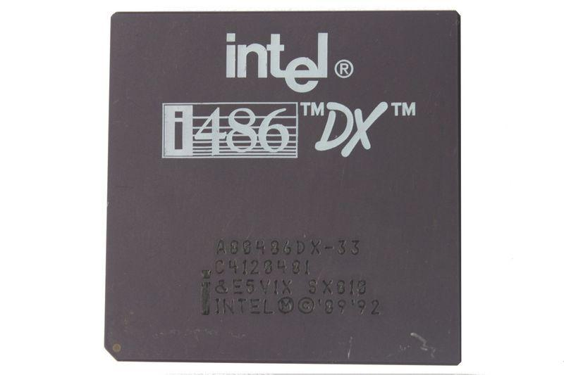Коэффициенты умножения появились отнюдь не в первых процессорах i486. Модели 486SX и 486DX обходились без него и работали на частоте системной шины. Поддержка множителя появилась лишь в кристалле 486DX2. При частоте системной шины 33 МГц тактовая частота самого процессора составляла 66 МГц. То есть множитель равнялся двум. В 486DX4 коэффициент умножения был увеличен до трех. Вместе с введением множителей появился оверклокинг.
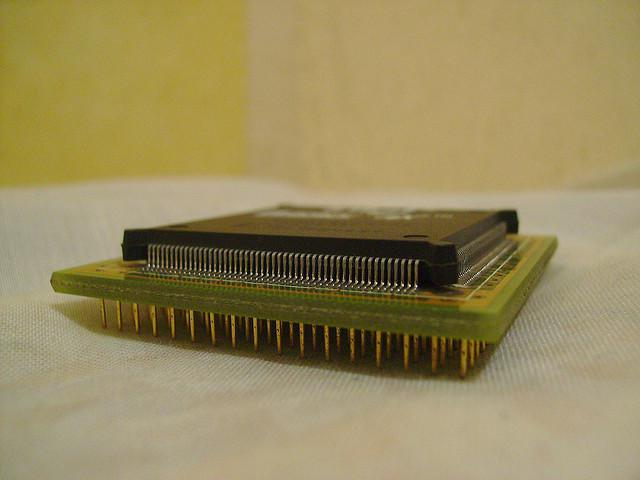Как и в случае с третьим поколением, изначально Intel вывела на рынок только две модели: 486SX и 486DX. Как мы уже говорили, единственным различием между этими процессорами стало отсутствие встроенного FPU. В остальном кристаллы были полностью идентичны. Кстати, из-за большого процента брака при производстве некоторые модели 486SX представляли собой 486DX с неисправным сопроцессором. Таким образом Intel пыталась сократить издержки производства. Чипы производились по 1-мкм техпроцессу, а чуть позже и по 0,8-мкм технормам. Тактовая частота обеих моделей варьировалась от 25 до 50 МГц. Максимальное энергопотребление достигало отметки в 5 Вт.
Несмотря на то, что Intel все активнее защищала свои разработки патентами, на рынке появилось немало клонов i486. Производством копий занимались AMD, Cyrix, IBM, Texas Instruments и другие.
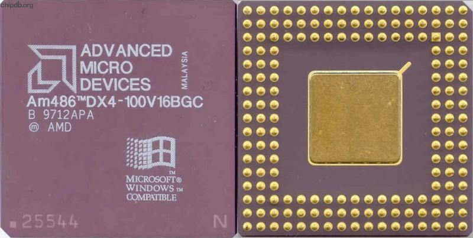Основу линейки клонов AMD Am486 составляли модели Am486SX и Am486DX. Процессоры производились по более тонкому 0,7-мкм техпроцессу, а затем в соответствии с 0,5-мкм и 0,35-мкм технологическими нормами. Технически Am486SX и Am486DX были полными аналогами кристаллов Intel. Процессоры, не использовавшие множители, имели частоты от 25 до 40 МГц, а «камни» с коэффициентом умножения работали на тактовой частоте от 66 до 100 МГц.
В 1995 году AMD представила самый быстрый i486-совместимый процессор под названием Am5x86. Кристалл производился по 350-нм техпроцессу и имел 1,6 млн транзисторов. Объем кэш-памяти 1-го уровня был увеличен до 16 Кбайт, а коэффициент умножения был равен 4. Процессор работал с шиной с частотой 33 МГц, то есть тактовая частота самого кристалла составляла 133 МГц. По производительности Am5x86 был сопоставим с процессором Pentium с частотой 75 МГц. Am5x86 был топовым решением AMD до выхода новых процессоров поколения K5.
Клоны i486, производимые другими компаниями, ничем особенным не отличались. Они архитектурно повторяли оригинал и, естественно, имели такую же производительность.
Motorola 68020, 68030, 68040
В 1984 году, за несколько месяцев до появления i386, Motorola выпустила свой первый полностью 32-битный чип 68020. Процессор производился по 2-мкм техпроцессу и насчитывал 190 000 транзисторов. Его тактовая частота составляла от 12 до 33 МГц. В сравнении с предшественником 68010 новый процессор получил множество улучшений. Прежде всего, нужно отметить, что «двадцатый» работал с полноценными 32-битными внешними шинами данных и адресов, а также поддерживал новые инструкции и режимы адресации. При этом время выполнения некоторых инструкций было сокращено. Также 68020 стал первым процессором в линейке Motorola 68k со встроенной кэш-памятью первого уровня. Правда, ее объем составлял всего 256 байт. Увы, 68020 не имел встроенного FPU, хотя интерфейс кристалла обеспечивал поддержку до 8 сопроцессоров. Что касается производительности, то при частоте 33 МГц результат составил 5,36 млн инструкций в секунду.
Главной областью применения процессора вновь стали компьютеры Apple: Macintosh II и Macintosh LC. Помимо этого, Motorola 68020 также «прописался» в системах Sun 3, Hewlett-Packard 8711, Sinclair QL и Alpha Microsystems AM-2000.
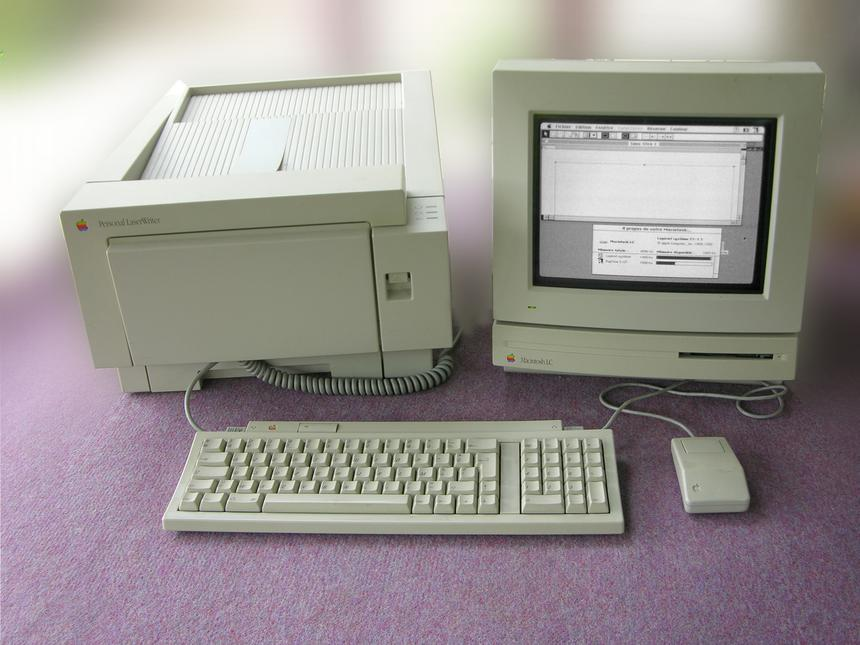Одновременно Motorola представила «урезанный» вариант процессора под названием 68EC020. Так, кристалл обладал 24-битной адресной шиной и поэтому умел адресовать лишь до 16 Мбайт памяти. Kodak и Apple применяли его в своих принтерах, а Commodore — в компьютерах Amiga 1200 и игровых консолях CD32.
В 1987 году в продаже появился следующий процессор компании Motorola — 68030. Он был полностью 32-разрядным. Шина данных в 68030 стала динамической, она могла функционировать в 8-, 16- и 32-битных режимах. Также появился синхронный режим работы шины данных и адресной шины, что увеличило скорость передачи данных. Производительность процессора возросла и за счет дополнительных 256 байт кэш-памяти первого уровня, сокращения времени доступа к кэшу инструкций и добавления блока управления памятью. Как и в случае с моделью 68020, «тридцатый» не имел встроенного сопроцессора. Что касается технических характеристик, то они во многом совпадали с таковыми у предшественника. Тактовая частота процессора варьировалась от 16 МГц до 50 МГц. Во втором случае производительность «камня» составляла порядка 18 миллионов инструкций в секунду.
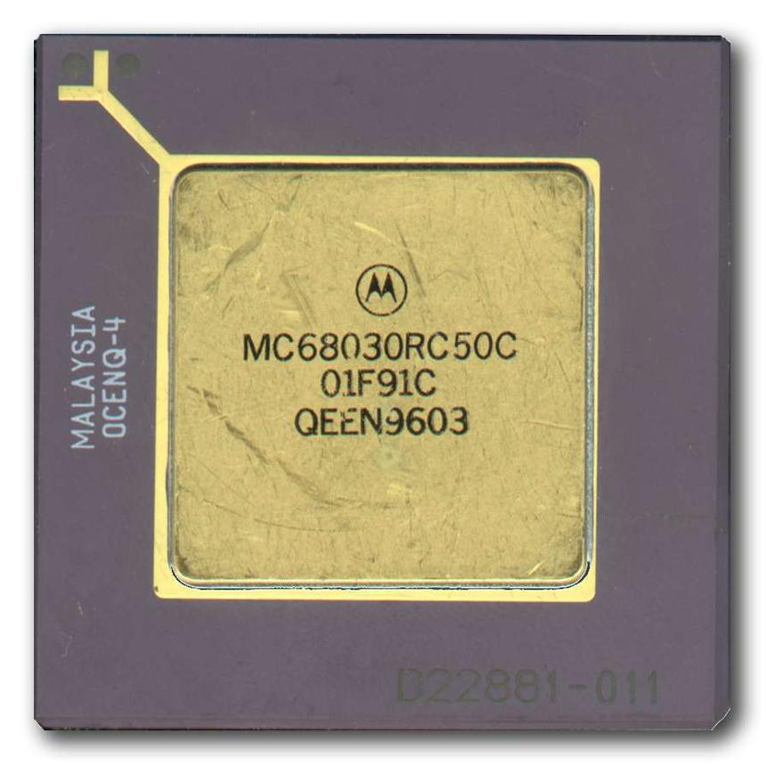68030 применялся всё в тех же компьютерах Apple Macintosh II и Commodore Amiga, а также в системах Next Cube, Sun 3/80, Atari TT и Atari Falcon. Была выпущена и урезанная версия процессора под названием 68EC030.
Процессор Motorola 68040, который стал доступен в 1990 году, привнес намного больше архитектурных изменений, нежели его предшественники. Так, впервые появился встроенный сопроцессор. В «сороковом» сохранилась поддержка блока управления памятью, который появился в предыдущем поколении «камней». Объем кэша-памяти инструкций и кэш-памяти данных был увеличен до 4 Кбайт каждый. Принцип работы процессора основывался на вычислительных конвейерах, которые состояли из шести стадий.
С появлением встроенного сопроцессора и увеличением объема кэш-памяти чип значительно усложнился. При одинаковой частоте производительность модели 68040 превышала скорость CPU прошлых поколений более чем в четыре раза. При этом кристалл сильно грелся, причем разработчики так и не смогли решить эту проблему. Отсюда тактовая частота процессора никогда не превышала отметки 40 МГц, хотя у самой Motorola были планы по запуску 50-мегагерцовой версии.
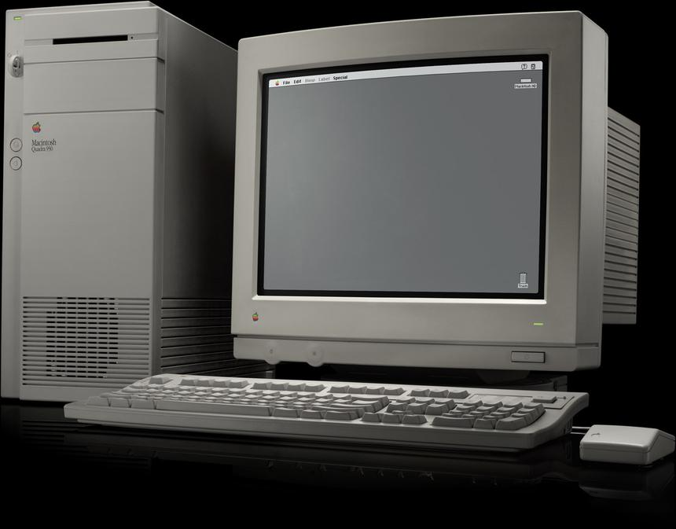По своим возможностям Motorola 68040 был сопоставим с Intel i486 и при одинаковой частоте даже превосходил его в скорости. Однако свои обороты в то время набирал оверклокинг, а 486-й выгодно отличался от «мотороловского» чипа как раз своим разгонным потенциалом.
Motorola не забыла и про младшие версии 68040, коих на этот раз оказалось две: 68EC040 и 68LC040. У обеих моделей отсутствовал встроенный сопроцессор, а версия 68EC040 в придачу лишилась блока управления памятью. Несмотря на это, процессоры демонстрировали достойную производительность. Так, 68LC040 не уступал в скорости 68020.
Как и прежде, Apple широко использовала процессоры Motorola в своих компьютерах. Например, 68040 стал основой High-End-системы Macintosh Quadra. Macintosh Centris и Performa также использовали процессоры семейства 68040. Плюс на базе «сорокового» были построены компьютеры Amiga 4000/4000T, а также некоторые серверы Alpha Microsystems и HP.
NEC V60, V70, V80
Японские производители известны тем, что они уделяют очень много внимания внутреннему рынку. С процессорами NEC сложилась примерно такая же ситуация: первое 32-битное решение под названием V60, выпущенное в феврале 1986 года, было доступно лишь в Стране восходящего солнца. Если все предыдущие разработки компании базировались на x86-архитектуре, то теперь дизайн процессоров отчасти напоминал RISC-модель с большим количеством регистров общего назначения. Тем не менее, «камень» унаследовал многое от CISC-архитектуры. Также поддерживалась эмуляция платформы x86.
V60 не был полностью 32-битным — ширина внешней шины данных составляла 16 бит, а адресная шина была 24-разрядной. Сам процессор производился по 1,5-мкм техпроцессу и насчитывал 375 тысяч транзисторов. Он использовал вычислительные конвейеры с шестью стадиями, а также имел встроенный сопроцессор и блок управления памятью. При тактовой частоте 16 МГц производительность V60 составляла 3,5 миллиона инструкций в секунду. Компания Sega использовала этот «камень» в своих аркадных платформах System 32 и Model 1.
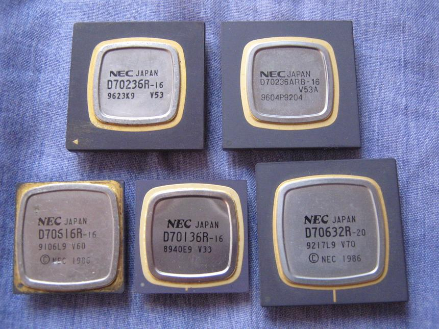Спустя год NEC выпустила процессор V70. Новый чип умел работать с полноценными 32-битными шинами данных и адресов — это и было его основным отличием от V60. Поначалу процессор производился по 1,5-мкм техпроцессу, однако потом были освоены и 1,2-мкм технологические нормы. Максимальная тактовая частота V70 составляла 20 МГц. При такой скорости работы производительность чипа составляла 6,6 миллионов инструкций в секунду. Как и предшественник, V70 был не очень популярен, но компания Sega продолжала использовать его в своих платформах.
Весной 1989 года свет увидел процессор V80. Этот кристалл уже имел кэш-память инструкций и кэш-память данных объемом 1 Кбайт каждая, а также блок предсказания ветвлений. Производство кристалла было переведено на 0,8-мкм техпроцесс, а сам чип содержал 980 тысяч транзисторов. Показатель тактовой частоты также вырос: V80 работал на частоте 25/33 МГц. Производительность флагмана составляла 16,5 миллионов инструкций в секунду. В планы NEC входил выпуск V80 с частотой 45 МГц, но проект так и остался на бумаге.
V80 стал последним «камнем» NEC с архитектурой CISC. Следующая линейка процессоров, V800, базировалась на RISC-архитектуре.
DEC VAX
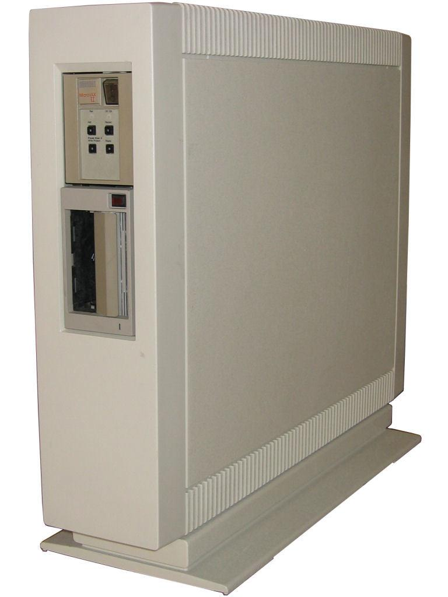В 1985 году DEC предложила свою линейку 32-битных процессоров, основанных на собственной архитектуре VAX. Первой ласточкой стал MicroVAX 78032, который также был первым устройством, изготовленным собственными силами компании. Процессор содержал 125 тысяч транзисторов и изготавливался по 3-мкм технологическим нормам NMOS. При частоте 5 МГц производительность чипа при работе с целыми числами была сопоставима со скоростью суперминикомпьютера VAX-11/780, выпущенного в 1977 году. Для ускорения операций с числами с плавающей запятой в дуэте с MicroVAX 78032 предлагалось использовать сопроцессор MicroVAX 78132. Кристалл 78032 применялся в компьютерах DEC, начиная с модели MicroVAX II.
А в 1987 году был представлен процессор CVAX — следующее поколение «камней» с архитектурой VAX. Хотя это решение правильнее называть не CPU, а чипсетом. CVAX состоял из самого процессора с индексом 78034, сопроцессора для ускорения вычислений с плавающей запятой CFPA и различных микросхем поддержки (например, контроллера памяти и контроллера шины Q-Bus).
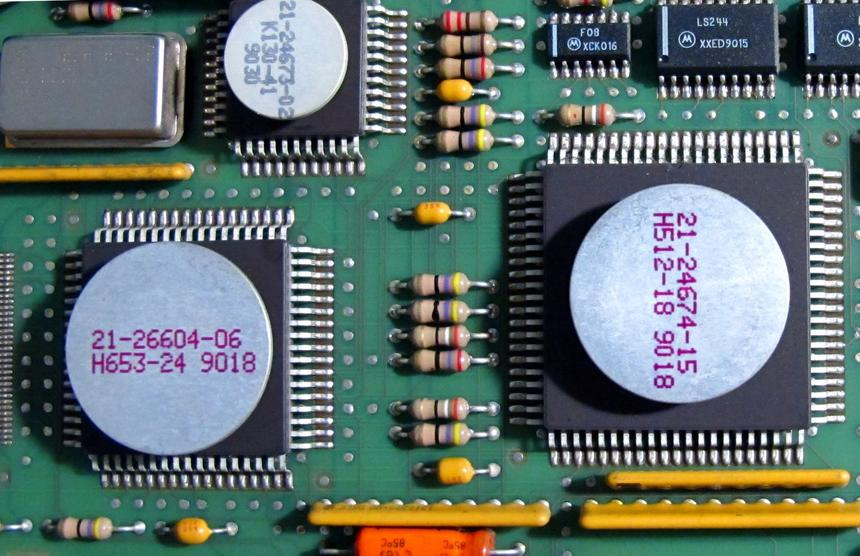Тактовая частота VAX 78034 составляла 11,11 МГц или 12,5 МГц. Производился процессор с помощью технологии CMOS первого поколения. Кристалл получил общую кэш-память инструкций и данных объемом 1 Кбайт. В то время как решения Intel и Motorola использовали в качестве кэша SRAM-память, кэш процессоров DEC использовал память типа DRAM. Также 78034 поддерживал 64 Кбайт внешней кэш-памяти. Первые системы, использующие CVAX, появились в 1987 году. Среди них были как высокопроизводительные решения (VAX 6000 Model 200), так и Low-End миникомпьютеры MicroVAX 3500.
Последним чипсетом, который успела выпустить компания DEC в 80-е годы, стал DEC Rigel. Как и CVAX, он состоял из процессора (REX520), сопроцессора DC523, контроллера кэш-памяти DC592 и микросхем поддержки. Объем кэш-памяти памяти уровня был увеличен до 2 Кбайт, а величина внешнего кэша составляла 128 Кбайт. REX520 изготавливался с помощью технологии CMOS второго поколения и содержал 320 тысяч транзисторов, больше половины из которых приходились именно на кэш-память. Как и предшественники, процессор нашел применение только в системах DEC (VAX 6000 Model 300/400 и VAXstation 3100 Model 76).